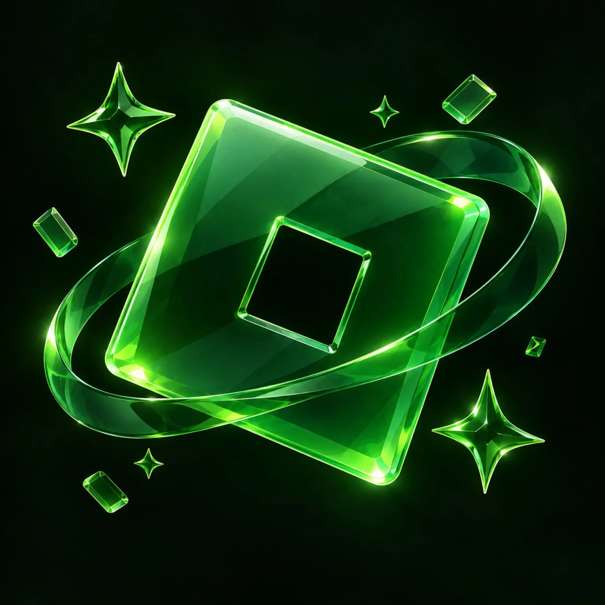
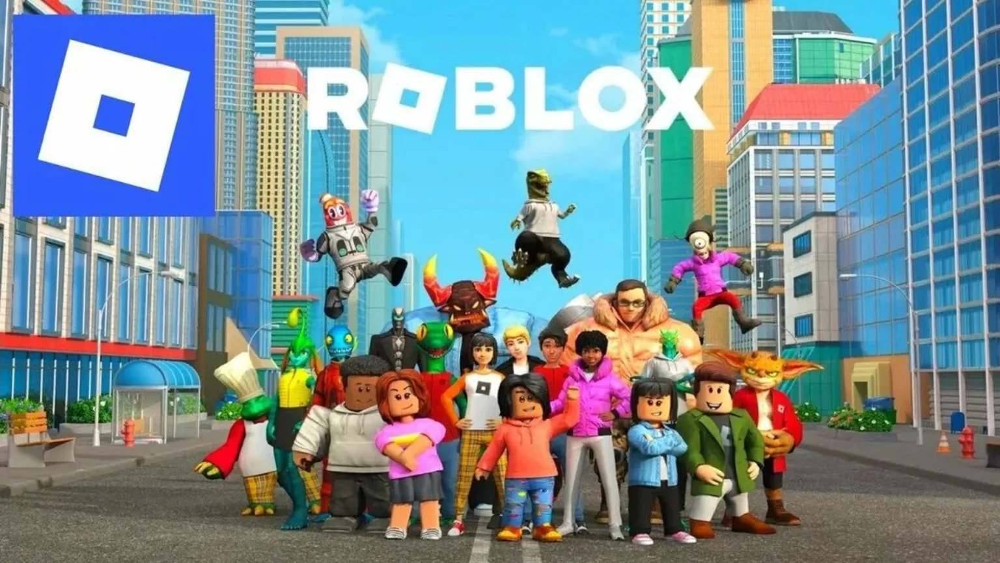
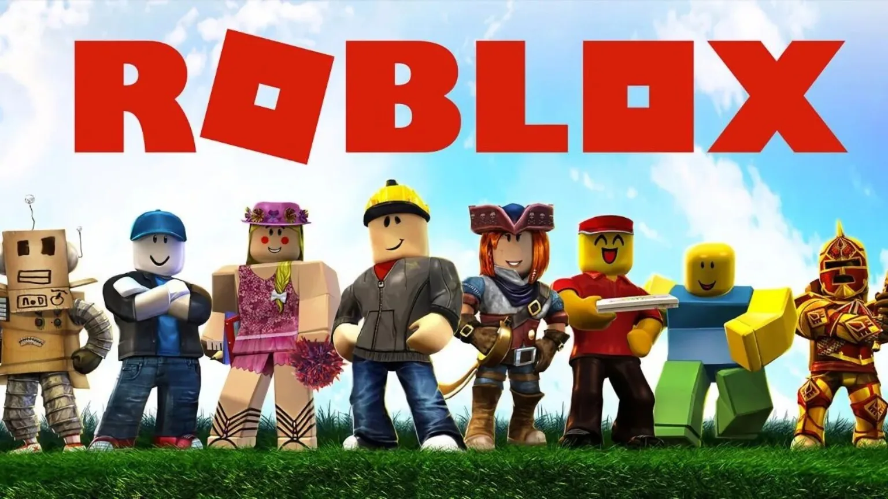
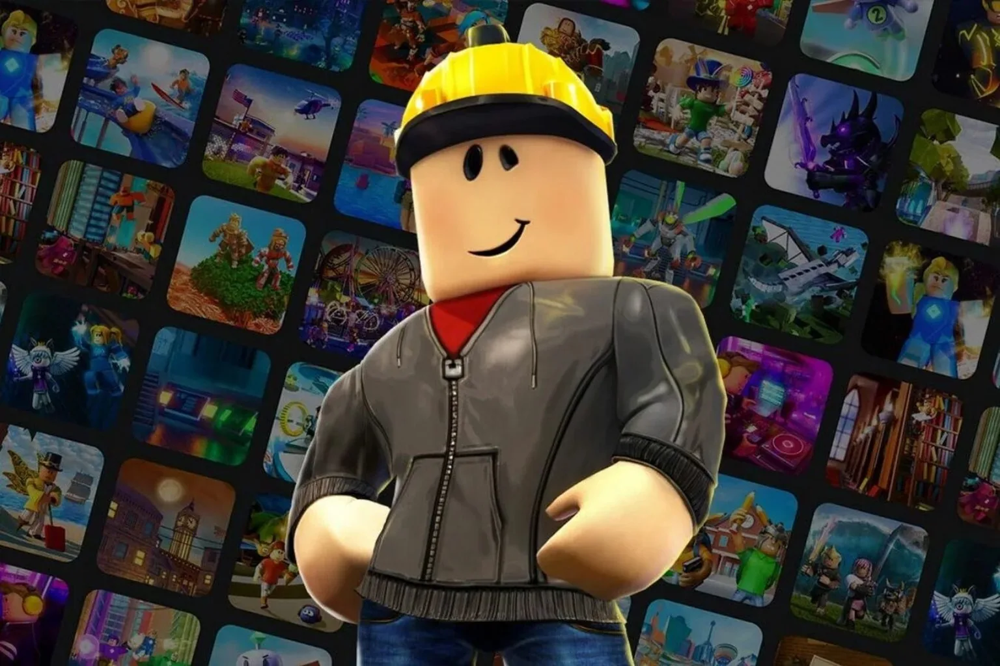

Liquid Glass UI
Frosted panels, layered depth and subtle highlights create a premium interface without heavy dependencies.

VORTEXA clean, fast home for the Vortex project — built around Roblox culture, technical knowledge and a glassy neon interface.
Sections designed for touch first.
Vortex uses a restrained visual system: translucent surfaces, soft green light, strong contrast and motion that never gets in the way.
Frosted panels, layered depth and subtle highlights create a premium interface without heavy dependencies.
Touch-sized controls, compact spacing and a slide-down menu make the layout comfortable on phones.
Browse original, source-linked explainers on Roblox, Studio, Robux, Luau and safety topics.
The APK is not published yet. The button is intentionally disabled until an official download destination is provided.
A lightweight timeline is ready for real releases as the project develops.
Initial mobile-first landing page, glass UI system, knowledge base, FAQ, status cards and disabled download flow.
Reserved for the first public build notes.
Short, original summaries with direct links to primary or established reference sources. Nothing here is presented as official Vortex or Roblox documentation.

Roblox is an online platform where people can play, create and share interactive experiences. A useful distinction is between the platform itself and individual experiences built on it.

The service evolved from an early physics-oriented game platform into a large user-generated ecosystem with creators, studios, communities and a virtual economy.

Creators use Roblox Studio and platform services to build places, systems and multiplayer experiences, then publish and iterate them over time.
Robux is the platform's virtual currency. Users can obtain it through supported purchase or earning pathways and spend it on eligible virtual items and experiences.
Luau is the scripting language used across Roblox development. It extends Lua with features aimed at the needs of the platform and its developer workflow.
An executor is generally described as software that attempts to run script code outside the normal intended development or game workflow. Using unofficial executors can create security, account and moderation risks.
Tap a question to unfold it with the same soft, springy motion used throughout the site.